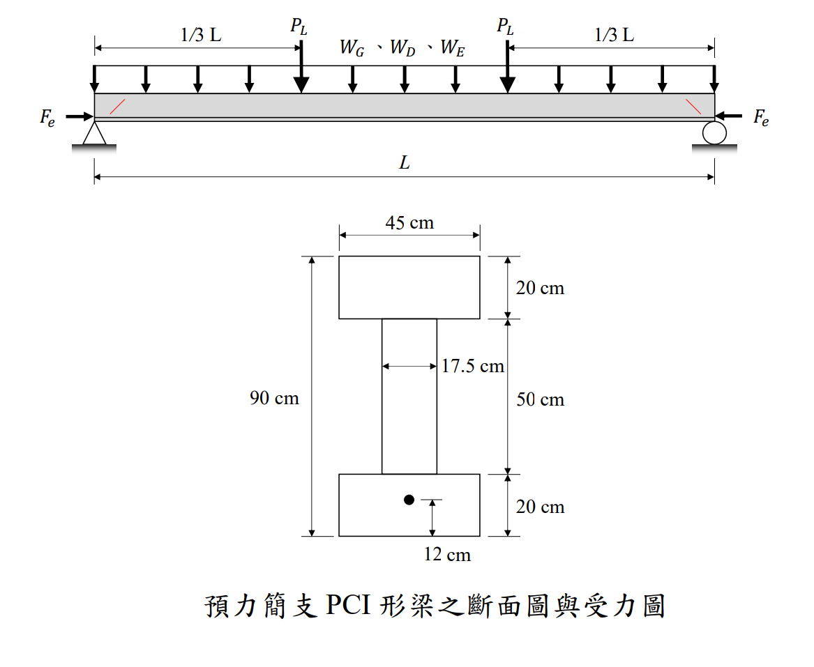
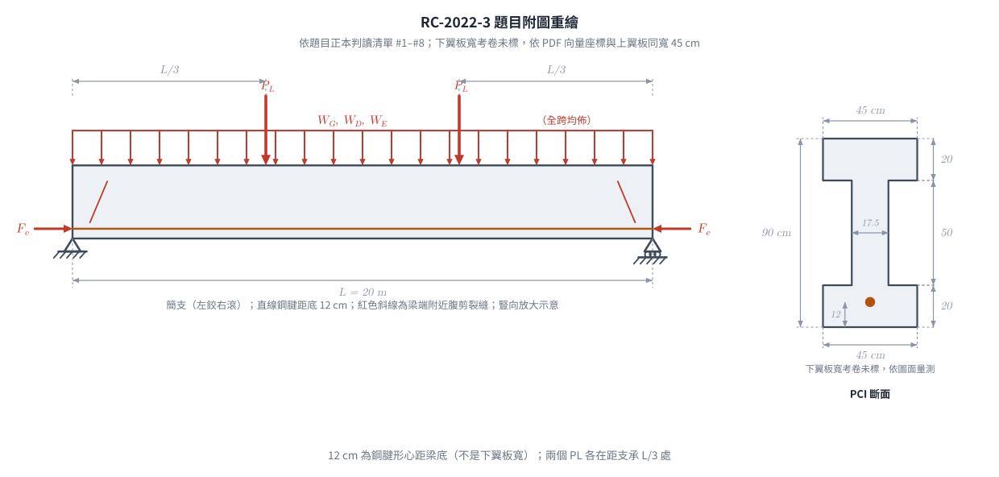
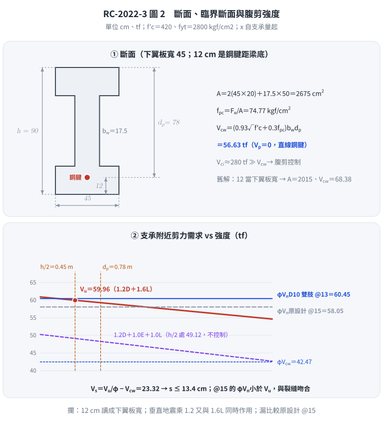

📄 題目正本：考卷原文・附圖・判讀清單（已確認）
RC-2022-3 題目正本
本檔只記錄考卷上寫了什麼、圖上畫了什麼，不含任何解法。解析見同資料夾
RC-2022-3.md。
判讀清單已經確認（凍結）；本檔原則上不再修改（改動須回考卷原圖並記 log）。
| 項目 | 內容 |
|---|---|
| 考卷 | raw/exams/RC-2022_鋼筋混凝土設計與預力.pdf 第 3 頁（頁次 4－3），第三題 |
| 考年 | 民國 111 年（2022） |
| 配分 | 25 分 |
| 附圖 | RC-2022-3-fig-1.png（預力簡支 PCI 形梁之斷面圖與受力圖；考卷只有這一張複合圖，沒有第二張圖） |
| 判讀狀態 | 已確認（2026-11-15 使用者授權依 Claude 建議確認；轉錄 2026-11-15；PyMuPDF 110 dpi 全頁＋400–450 dpi 局部目視、文字層逐字核對、斷面以 PDF 向量座標量測；盲讀後才比對既有解析） |
1. 考卷原文（逐字）
三、如下圖所示之簡支預力混凝土梁跨徑 $L$ = 20 m，鋼筋混凝土之單位重 $\gamma$ = 2.4 tf/m³、混凝土強度 $f'_c$ = 420 kgf/cm²，主筋降伏強度 $f_y$ = 4200 kgf/cm²、肋筋降伏強度 $f_{yt}$ = 2800 kgf/cm²，有效預力 $F_e$ = 200 tf。今於地震後發現距離梁端支承約水平距離為一倍有效深度處出現腹剪裂縫，經查原設計階段所採用之垂直肋筋為 D10@15 cm，使用載重包括：自重 $W_G$、均佈靜載重 $W_D$ = 1.1 tf/m、集中活載重 $P_L$ = 25 tf，但未考慮垂直向地震力。今擬重新檢討，假設垂直向地震力為均佈載重，其值為自重 $W_G$ 與均佈靜載重 $W_D$ 兩者相加後的 25%，且仍使用 D10 當作垂直肋筋，請問肋筋間距 s 宜如何配置以避免產生腹剪破壞？（25 分）
預力簡支 PCI 形梁之斷面圖與受力圖
2. 考卷給的公式、附表與參數
- 簡支，$L=20$ m；$\gamma=2.4$ tf/m³；$f'_c=420$、$f_y=4200$、$f_{yt}=2800$ kgf/cm²；$F_e=200$ tf。
- 載重：自重 $W_G$（由斷面與 $\gamma$ 計算）、$W_D=1.1$ tf/m、$P_L=25$ tf（附圖兩處）、垂直地震力 $W_E=0.25(W_G+W_D)$（均佈）。
- 原設計 D10@15 cm 垂直肋筋；重新檢討仍用 D10。
- 卷首表 1（照錄本題相關列）：D10 標稱直徑 0.953 cm、標稱面積 0.7133 cm²。
- 沒有給：載重組合與載重因數、肋筋肢數、有效深度數值（須由斷面推得）、下翼板寬度數值（見 #4）。
- 卷首：※注意：本科目試題之作答規範：中國土木水利工程學會「混凝土工程設計規範與解說」（土木401-100），未依規範作答，不予計分。注意事項：可以使用電子計算器。不必抄題，作答時請將試題題號及答案依照順序寫在試卷上，於本試題上作答者，不予計分。本科目除專門名詞或數理公式外，應使用本國文字作答。
3. 附圖

圖面文字照錄：1/3 L、P_L、W_G、W_D、W_E、P_L、1/3 L、F_e、F_e、L、45 cm、20 cm、17.5 cm、90 cm、50 cm、20 cm、12 cm、預力簡支 PCI 形梁之斷面圖與受力圖。
4. 判讀清單
| # | 項目 | 判讀 | 圖上／題文依據 | 把握 |
|---|---|---|---|---|
| 1 | 下翼板寬度 | 45 cm（與上翼板同寬）。考卷未標註；PDF 向量座標：上翼板與下翼板矩形皆 x＝260.4～337.9 pt（77.5 pt），上翼板寬 45 cm → 1.72 pt/cm；腹板 30.3 pt＝17.6 cm、各層高 34.5／85.7／34.2 pt＝20／50／20 cm，比例一致 | 向量座標 | 確定（解讀，影響答案；2026-11-15 使用者授權依 Claude 建議確認） |
| 2 | 12 cm | 鋼腱形心距梁底 12 cm（尺寸線上端對齊黑點右側短線、下端對齊梁底），不是下翼板寬；向量量測鋼腱中心距底 20.1 pt＝11.7 cm | 400 dpi；向量座標 | 確定 |
| 3 | 載重組合 | 考卷沒有給；依現行規範各載重組合取控制者——含地震的 $1.2D+1.0E+1.0L$（$E$ 為 $W_E$）與 $1.2D+1.6L$ 都要檢核；$W_E$ 不可再乘靜載重因數 | 題文未給組合 | 確定（解讀；依本庫「規範版本」規則） |
| 4 | 斷面其餘尺寸 | 上翼板 45×20；腹板 17.5×50；下翼板厚 20；全深 90；左右對稱，鋼腱在中線 | 附圖尺寸；向量座標（腹板中心＝翼板中心 299.2 pt） | 確定 |
| 5 | 鋼腱線形 | 直線，全長距底 12 cm；$F_e$ 於兩端水平作用於鋼腱高度 → 無垂直分量 | 受力圖：鋼腱為貼近梁底的水平線，$F_e$ 箭頭水平 | 確定 |
| 6 | 有效深度 | $d_p=90-12=78$ cm（≥ 0.8h＝72）；裂縫在距支承約一倍有效深度處 | #2；題文 | 確定（解讀） |
| 7 | 集中載重位置 | 兩個 $P_L$，分別在距左、右支承 $L/3$ | 受力圖兩個 1/3 L 尺寸 | 確定 |
| 8 | 支承與均佈載重 | 左鉸右滾；$W_G$、$W_D$、$W_E$ 皆全跨均佈 | 受力圖 | 確定 |
| 9 | 肋筋肢數 | 考卷沒有給；D10 垂直肋筋一般為雙肢（$A_v=2\times0.7133$），須明列 | 卷首表 1 | 確定（解讀） |
| 10 | 所求 | 依腹剪強度檢討，求 D10 垂直肋筋間距 $s$ | 題文 | 確定 |
轉錄：2026-11-15（RC-U4-2+U4-3+U4-4 題目正本推廣・批 1）
確認：2026-11-15 使用者授權依 Claude 建議確認（RC-U4-2+U4-3+U4-4 題目正本推廣・批 1，關卡一）
考題編號：RC-2022-3
主分類： RC-U4-4 預力梁剪力分析與設計
副分類： RC-U2-1 RC 剪力強度分析與設計
設計法： USD 強度設計法
標籤： 預力梁 腹剪裂縫 Vcw PCI形梁 垂直地震力 肋筋間距 腹剪破壞 載重組合 臨界斷面h/2
1. 題目（考卷原文見題目正本）
考卷原文、公式／附表、附圖與判讀清單（已確認）見
RC-2022-3-problem.md。本節只列解題時最容易讀錯的地方與本解使用的記號；題意以題目正本為準。

重繪自考卷附圖，依題目正本判讀清單 #1–#8。本圖攔下的讀錯：把 12 cm 當成下翼板寬；鋼腱距底取 10 cm。
常見誤讀
| 項目 | 正確判讀 | 常見誤讀 |
|---|---|---|
| 下翼板寬 | 45 cm（考卷未標，向量量測與上翼板同寬） | 12 cm（本庫舊解） |
| 12 cm | 鋼腱形心距梁底 → $d_p$＝78 cm | 下翼板寬；鋼腱距底 10 cm、$d_p$＝80 |
| 附圖 | 考卷只有一張複合圖（受力圖＋斷面） | 另有第二張斷面圖（本庫舊 §1 引用不存在的 fig-2） |
| 載重組合 | 考卷沒有給；依現行規範各組合取控制者（含 $1.2D+1.0E+1.0L$ 與 $1.2D+1.6L$） | $W_E$ 併入靜載重乘 1.2，再與 $1.6L$ 同時作用（本庫舊解；非規範組合） |
| $V_s$ 間距減半門檻 | kgf 制 $1.06\sqrt{f'_c}b_wd$ | SI 係數 $\tfrac13\sqrt{f'_c}b_wd$ 直接代 kgf（本庫舊解） |
| $V_p$ | 直線鋼腱，$V_p$＝0 | — |
本解記號： $L$＝20 m；上翼板 45×20、腹板 $b_w$＝17.5×50、下翼板 45×20 cm；$h$＝90、$d_p$＝78 cm；$F_e$＝200 tf；$\gamma$＝2.4 tf/m³；$W_D$＝1.1 tf/m；$P_L$＝25 tf（$L/3$ 兩處）；$W_E$＝0.25($W_G$＋$W_D$)；D10 $A_b$＝0.7133 cm²，雙肢 $A_v$＝1.4266 cm²；$f'_c$＝420、$f_{yt}$＝2800 kgf/cm²；$D=W_G+W_D$。
2. 考題核心精神與出題者意圖 (Core Concepts & Examiner's Intent)
核心觀念： 預力梁支承附近剪力大、彎矩小，混凝土剪力強度由腹剪強度 $V_{cw}$ 控制（主拉應力在形心處達到開裂強度）。預力 $f_{pc}=F_e/A$ 提高 $V_{cw}$，所以 $V_{cw}$ 對斷面積非常敏感——斷面讀錯（下翼板寬），$V_{cw}$ 就錯。
出題者意圖：
- 由 PCI 斷面求 $A$、自重、$d_p$；$f_{pc}=F_e/A$ 與 $V_{cw}$（kgf 制係數）
- 加入垂直地震力 $W_E$ 後，依規範載重組合求 $V_u$，判斷控制組合
- 由 $V_s=V_u/\phi-V_{cw}$ 求 D10 肋筋間距，並檢核間距上限、最少剪力筋、$V_s$ 上限
- 檢討原設計 D10@15 為何出現腹剪裂縫
3. 解題戰略地圖與陷阱分析 (Strategic Roadmap & Trap Analysis)
作戰計畫：
Step 1：斷面性質 A、形心、dp（≥0.8h）、WG、WE
Step 2：fpc = Fe/A → Vcw = (0.93√f'c + 0.3fpc) bw dp + Vp
Step 3：各載重組合在臨界斷面（距支承 h/2）的 Vu → 取控制者
Step 4：Vs = Vu/φ − Vcw → s = Av fyt dp / Vs
Step 5：檢核 Vs 上限、間距上限、Av,min；Vci 確認不控制；原設計 @15 檢討
關鍵陷阱：
| # | 陷阱 | 應對策略 |
|---|---|---|
| ⚠1 | 斷面讀錯 | 12 cm 是鋼腱距底；下翼板寬 45 → $A$＝2675 cm² |
| ⚠2 | $d_p$ | 頂面至鋼腱形心 90−12＝78 cm（≥ 0.8h＝72），剪力計算的 $d$ 取 $d_p$ |
| ⚠3 | $f_{pc}$ 只取 $F_e/A$ | 形心處偏心項為零 |
| ⚠4 | 載重組合 | 現行規範：$1.4D$、$1.2D+1.6L$、$1.2D+1.0E+1.0L$；$W_E$ 是地震載重 $E$，不可再乘 1.2，也不與 $1.6L$ 同時作用 |
| ⚠5 | 臨界斷面 | 預力構材取距支承面 $h/2$（＝45 cm）；裂縫在約 $d_p$ 處，兩者結果同為 @13 |
| ⚠6 | kgf 制係數 | $V_{cw}$ 0.93、間距減半門檻 1.06、$V_s$ 上限 2.12、$A_{v,\min}$ $0.2\sqrt{f'_c}$ 與 3.5——SI 係數（0.29、0.33、0.66、0.062、0.35）不可直接代 kgf |
3.5 變數層次分析 (Variable Hierarchy Analysis)
複習提示：第一次解題後，在每個卡住的知識點旁標記
⚠；第二次複習時只看有⚠的項目。
最終目標
求加入垂直地震力檢討後，D10 肋筋所需間距 s，以滿足 φ(Vcw + Vs) ≥ Vu
本題關鍵公式（依計算順序）
$$\text{Step 1：} A=\sum b_ih_i,\quad W_G=A\gamma,\quad W_E=0.25(W_G+W_D)$$
$$\text{Step 2：} \boxed{V_{cw}}=(0.93\sqrt{f'_c}+0.3\boxed{f_{pc}})\,b_w d_p+V_p,\quad \boxed{f_{pc}}=\frac{F_e}{A}$$
$$\text{Step 3：} \boxed{V_u}=w_u\left(\frac{L}{2}-x\right)+P_u\quad(x<L/3)$$
$$\text{Step 4：} \boxed{V_s}=\frac{\boxed{V_u}}{\phi}-\boxed{V_{cw}},\quad \phi=0.75$$
$$\text{Step 5：} s\le\frac{A_vf_{yt}d_p}{\boxed{V_s}}$$
L1：題目直接給定
| 符號 | 數值 | 說明 |
|---|---|---|
| $L$ | 20 m | 跨度 |
| $f'_c$ | 420 kgf/cm² | 混凝土強度 |
| $f_{yt}$ | 2800 kgf/cm² | 肋筋降伏強度 |
| $F_e$ | 200 tf | 有效預力 |
| $\gamma$ | 2.4 tf/m³ | RC 單位重 |
| $W_D$ | 1.1 tf/m | 均佈靜載重 |
| $P_L$ | 25 tf × 2（在 $L/3$、$2L/3$） | 集中活載重 |
| D10 | $d_b = 0.953$ cm，$A_b = 0.7133$ cm² | 卷首表 1 |
| 斷面 | 上翼板 45×20、腹板 17.5×50、下翼板 45×20 cm；鋼腱距底 12 | 附圖（下翼板寬向量量測） |
L2：需知識點推導
| 符號 | 公式／來源 | 卡關? |
|---|---|---|
| $A$ | $2(45\times20)+17.5\times50=2675$ cm² | |
| $d_p$ | $90-12=78$ cm ≥ $0.8h$＝72 | |
| $W_G$、$W_E$ | 0.642、0.4355 tf/m | |
| $f_{pc}$、$V_{cw}$ | 74.77 kgf/cm²；56.63 tf | |
| 控制組合 | $1.2D+1.6L$：$V_u$＝59.96 tf（$h/2$） | |
| $A_v$ | 雙肢 1.4266 cm²（考卷未給肢數，假設） |
L3：深層知識（不懂就卡住）
| 知識點 | 說明 | 卡關? |
|---|---|---|
| 腹剪 vs 彎剪 | 支承附近 $V_{ci}$ 很大（$M_{cre}/M_{\max}$ 項），$V_c=\min(V_{ci},V_{cw})$ 由 $V_{cw}$ 控制 | |
| 垂直地震的載重組合 | $W_E$ 屬地震載重 $E$，與 $1.2D$、$1.0L$ 組合；它不一定控制 | |
| 預力構材臨界斷面 | 距支承面 $h/2$（RC 為 $d$） | |
| kgf 制係數換算 | $\sqrt{\text{MPa}}$ 係數 ×3.19 → $\sqrt{\text{kgf/cm}^2}$ 係數（0.29→0.93、0.33→1.06、0.66→2.12） |
4. 步驟化詳細計算過程 (Step-by-Step Detailed Calculation)
依現行建築物混凝土結構設計規範（2023）：載重組合 5.3、預力構材腹剪強度 $V_{cw}$、剪力筋間距與最少剪力筋（kgf 制係數）。
Step 1：截面性質與載重
$$A=45\times20+17.5\times50+45\times20=900+875+900=\mathbf{2675\ \text{cm}^2}$$
斷面上下對稱，形心距底 45 cm；$I=2\left(\frac{45\times20^3}{12}+900\times35^2\right)+\frac{17.5\times50^3}{12}=2{,}447{,}292$ cm⁴。
$$d_p=90-12=\mathbf{78\ \text{cm}}\ \ge 0.8h=72\ \text{cm}\ \checkmark,\qquad b_w=17.5\ \text{cm}$$
$$W_G=2675\times10^{-4}\times2.4=\mathbf{0.642\ \text{tf/m}},\qquad D=W_G+W_D=1.742\ \text{tf/m}$$
$$W_E=0.25\times1.742=\mathbf{0.4355\ \text{tf/m}}$$
Step 2：腹剪混凝土強度 $V_{cw}$
$$f_{pc}=\frac{F_e}{A}=\frac{200{,}000}{2675}=\mathbf{74.77\ \text{kgf/cm}^2}$$
$$V_{cw}=(0.93\sqrt{420}+0.3\times74.77)\times17.5\times78=(19.06+22.43)\times1365=\mathbf{56{,}630\ \text{kgf}=56.63\ \text{tf}}$$
（直線鋼腱 $V_p$＝0。）
Step 3：各載重組合的 $V_u$（臨界斷面 $x=h/2=0.45$ m）
兩個 $P_L$ 對稱，支承反力含 $P_u$；$x<L/3$，故 $V_u=w_u(10-x)+P_u$。
| 組合 | $w_u$ (tf/m) | $P_u$ (tf) | $V_u$ @ $h/2$ (tf) | $V_u$ @ $d_p$ (tf) |
|---|---|---|---|---|
| $1.4D$ | 2.439 | 0 | 23.29 | 22.49 |
| $\mathbf{1.2D+1.6L}$ | 2.090 | 40 | 59.96 | 59.27 |
| $1.2D+1.0E+1.0L$ | $2.090+0.4355=2.526$ | 25 | 49.12 | 48.29 |
→ $1.2D+1.6L$ 控制，$V_u$＝59.96 tf。依題目要求加入垂直地震力檢討後，含地震的組合（49.12 tf）不控制。
Step 4：需求鋼筋剪力
$$\phi V_{cw}=0.75\times56.63=42.47\ \text{tf}<V_u=59.96\ \text{tf}\Rightarrow\text{需剪力筋}$$
$$V_s=\frac{59.96}{0.75}-56.63=79.95-56.63=\mathbf{23.32\ \text{tf}}$$
Step 5：D10 肋筋間距與檢核
$$s\le\frac{A_vf_{yt}d_p}{V_s}=\frac{1.4266\times2800\times78}{23{,}320}=\mathbf{13.4\ \text{cm}}$$
檢核：
- $V_s$ 上限：$2.12\sqrt{f'_c}b_wd_p=59.31$ tf ≥ 23.32 ✓（斷面足夠）
- 間距減半門檻：$1.06\sqrt{f'_c}b_wd_p=29.65$ tf > 23.32 → 間距上限 $\min(0.75h,60)=\min(67.5,60)=60$ cm ✓
- 最少剪力筋：$A_{v,\min}/s=\max(0.2\sqrt{f'_c},3.5)\,b_w/f_{yt}$ → $s\le\frac{1.4266\times2800}{4.099\times17.5}=55.7$ cm ✓（另一條 $A_{ps}f_{pu}$ 式因考卷未給鋼腱資料無法檢核，且 13 cm 遠小於上述限值）
採 D10 雙肢 @13 cm：
$$V_s=\frac{1.4266\times2800\times78}{13}=23.97\ \text{tf},\qquad \phi(V_{cw}+V_s)=0.75(56.63+23.97)=60.45\ \text{tf}\ge59.96\ \checkmark$$
$$\boxed{s\le13.4\ \text{cm，採 D10（雙肢）@13 cm}}$$
（以裂縫位置 $x=d_p$ 計：$V_u$＝59.27、$V_s$＝22.40、$s\le13.9$ cm，同樣配 @13。）

圖 2 斷面、臨界斷面與腹剪強度。12 cm 是鋼腱距梁底（下翼板寬 45）；臨界斷面取 $h/2$，需求線在此高於原設計 @15 的強度、低於 @13 的強度。本圖攔：把 12 cm 讀成下翼板寬、垂直地震乘 1.2 又與 1.6L 同時作用、漏比原設計 @15。
5. 關鍵爭議點與進階探討 (Critical Issues & Advanced Discussion)
爭議點 1：原設計 D10@15 為何出現腹剪裂縫
$$V_s^{@15}=\frac{1.4266\times2800\times78}{15}=20.77\ \text{tf},\qquad \phi V_n=0.75(56.63+20.77)=58.05\ \text{tf}<V_u=59.96\ \text{tf}$$
原設計在 $1.2D+1.6L$ 下強度已不足（約差 3%），與梁端出現腹剪裂縫的現象方向一致；只要把間距縮到 13 cm 即可。垂直地震組合（49.12 tf）在現行組合下不控制。
爭議點 2：舊解（2026-11-15 勘誤前）與差異
| 項目 | 舊解 | 本解 |
|---|---|---|
| 下翼板寬 | 12 cm | 45 cm |
| $A$、$W_G$ | 2015 cm²、0.484 tf/m | 2675 cm²、0.642 tf/m |
| $d_p$ | 80 | 78 |
| $f_{pc}$、$V_{cw}$ | 99.25、68.38 tf | 74.77、56.63 tf |
| 載重組合 | $1.2(W_G+W_D+W_E)+1.6P_L$ → $V_u$＝61.86（$x$＝0.8 m） | 現行組合取控制者 → 59.96（$h/2$） |
| 間距減半門檻 | $\tfrac13\sqrt{f'_c}b_wd$＝9.49 tf（SI 係數代 kgf） | $1.06\sqrt{f'_c}b_wd$＝29.65 tf |
| 答案 | $s\le22.7$，D10@20 | $s\le13.4$，D10@13 |
斷面積少算 25% → $f_{pc}$ 高估 33%、$V_{cw}$ 高估 21%，是答案改變的主因。若照舊解的組合（非規範組合）配合正確斷面，$V_u$＝64.95 tf、$s\le10.4$ cm，僅作對照。
爭議點 3：$V_{ci}$ 不控制（驗算）
$x=h/2$、$1.2D+1.6L$：$e=33$ cm，$f_{pe}$（底緣）＝196.1、$f_d$＝14.09 kgf/cm²，$M_{cre}=\frac{I}{y_b}(1.6\sqrt{f'_c}+f_{pe}-f_d)=116.8$ tf·m；$V_i$＝43.33 tf、$M_{\max}$＝19.53 tf·m：
$$V_{ci}=0.16\sqrt{f'_c}b_wd_p+V_d+\frac{V_iM_{cre}}{M_{\max}}\approx280\ \text{tf}\gg V_{cw}=56.63\ \text{tf}$$
支承附近 $V_c=V_{cw}$，題目以腹剪檢討正確。
爭議點 4：$f_{pc}$ 為何只取 $F_e/A$
鋼腱偏心 $e=45-12=33$ cm，但 $f_{pc}$ 定義在形心處，偏心彎矩項 $F_ee\cdot0/I=0$，故 $f_{pc}=F_e/A$。
爭議點 5：規範版本
考卷指定土木 401-100，本解改依現行建築物混凝土結構設計規範（2023）：載重組合為 $1.2D+1.6L$、$1.2D+1.0E+1.0L$ 等（401-100 同屬 ACI 318-05 以後的組合，結果相同）；$V_{cw}$、間距上限、$A_{v,\min}$ 以 kgf 制係數計算。肋筋肢數考卷未給，本解假設雙肢。
修正日期：2026-11-15（§1 改為指向題目正本，插入重繪附圖 figs/RC-2022-3-fig-1-problem.svg；舊 §1 重述改寫為常見誤讀與本解記號；本行非答案勘誤）
修正日期：2026-11-15（解析勘誤 FIX-RC-U4-2-B1，改依現行台灣規範（建築物混凝土結構設計規範 2023）：依題目正本 #1–#3 下翼板寬 12 → 45 cm、鋼腱距底 10 → 12 cm（$d_p$ 80 → 78）：$A$ 2015 → 2675 cm²、$f_{pc}$ 99.25 → 74.77、$V_{cw}$ 68.38 → 56.63 tf；載重組合改現行規範取控制者（$1.2D+1.6L$），臨界斷面取 $h/2$：$V_u$ 61.86 → 59.96 tf；間距減半門檻 $\tfrac13\sqrt{f'_c}b_wd$ → $1.06\sqrt{f'_c}b_wd$；肋筋 D10@20（$s\le22.7$）→ D10 雙肢 @13（$s\le13.4$）；補 $V_{ci}$ 驗算與原設計 @15 檢討；撤除 §1 待勘誤提示；驗證：.work/u4b1c/check_errata_U4_2_B1.py 重算 MISMATCHES: 0）
圖解補繪：2026-11-15（DIAG-RC-U4-2-B1，向量圖 figs/RC-2022-3-fig-2-shear.svg，腳本 figs/gen_RC-2022-3.py，數值取自本解 §4 並於腳本檔尾 assert，可重跑）